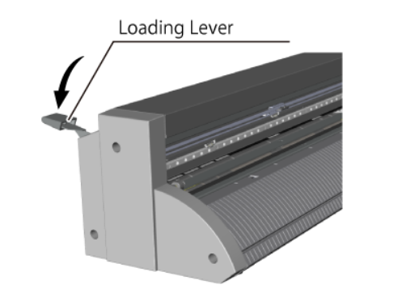
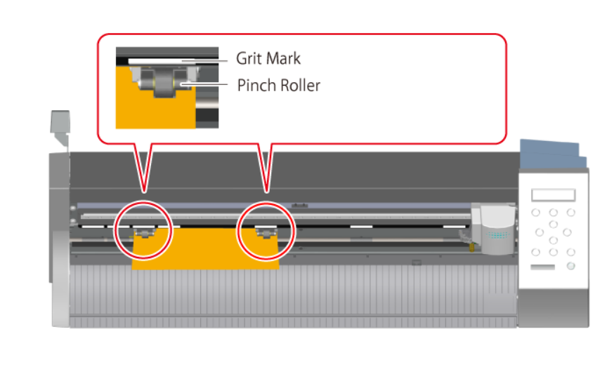

Basic Vinyl Cutting Home
Step 1: Load Material Into the Vinyl Cutter
Simplified loading instructions with audio clips
|
 Lower loading lever |
 Material and pinch roller placement |
 Raise loading lever |
When you're ready for the next step, click Step 2: Set Up Machine
Images and instruction drawn from: Roland GS-24 User's Manual
Background image: Adobe Stock Image by Svetliy, Edu. License